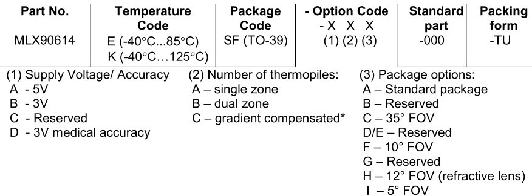
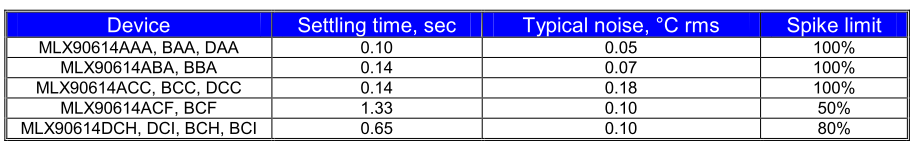

[^Black-Body-Spectrum]
[^Black-Body-Spectrum]Thermal imaging systems rarely seen in system applications due to their extremely high cost and technical barriers of entry.
Not Night Vision is a medically-accurate, low-cost thermal imaging system using a moving single-pixel, non-contact thermometer.
The smart aleck in the room might be asking,
“Why didn’t you use an 2D IR image sensor?”
That is a great question. For one, mature devices using an quality IR image sensors often range in the thousands of dollars. This trend has recently been broken by products finally nearing consumer level prices. A good example of this is the FLIR ONE1. However, these systems using relatively low quality image sensors are still in the range of $200-$300. Another might say,
“I can buy an IR image sensor like the NoIR2 for $35!”
Not gonna lie, that is pretty sound logic. I even linked the product page so you know it is true. The truth is the NoIR board is one of many systems that utilize what is often referred to as near-infrared (NIR) sensor. These sensor are great. They are cheap, easy to use, and have “IR” in the product name. The thing about these NIR sensor is that they only collect an extremely small range of wavelengths in the infrared specturm. Infrared starts on the edge of visible light at 750nm and extends all the way to 1000000nm (1mm). This might not seem like a big deal until we look at what wavelengths most objects radiate infared radiation at.
[^Black-Body-Spectrum]
Quickly, we see that NIR sensors will not be super helpful in building a thermal camera unless we are looking at objects heated precisely to 500°C.
The advantage of using a sensor that operates in the Medium Wavelength Infrared (MWIR) is that we will be able to see infrared radiation from objects of reasonable temperature. This is fitting since MWIR is often referred to as “thermal infrared”.
I will walk you through the reasoning on the exact thermometer I chose. The chart in Figure !! details the part number notation and the various configurations. The first choice was whether we needed a thermometer capable of high heat measurements (>85°C). For our use case, there were no foreseeable reasons to measure this high. A temperature code of [E] should be sufficient.
3
Next, we need to look at the option codes. A voltage supply of 3V will already be readily available for use with the PIC24. It would be convenient to use the same source, supply voltage/accuracy code of [B] or [D]. The area of concern for the number of thermopiles option is the settling time of the thermometer. Since we will be hoping to take readings from the thermometer in rapid succession, we want the settling time to be as small as possible. Looking at the chart in Figure !!, we see that generally the less thermopiles, the smaller the settling time. Additionally to this, the gradient compensated version is even slower than the dual zone version. This warrants desiring a code of [A] for number of thermopiles.
4
So far, the part number codes have been more or less negotiable. It would be convenient to agree with them but in the end minor issues. The last part number code is more crucial to the success of the device. The last option code, the package option, specifies the package the sensor will be put in affecting the field of view (FOV). The entire basis for a single-pixel camera necessitates sensor FOV that is narrow enough to represent a pixel. The MLX90614 is already known for being a high accuracy, non-contact thermometer with a narrow FOV. And from its variants, we want the version with narrowest FOV 5°, option code [I]. For reference, the FOV of the MLX90614xCI version of the sensor is shown in Figure !!.
Putting this all together, the part number option for the package option (related to FOV) takes priority as talked about earlier. I will use the notation of x representing “do not care”. This gives us an ideal part number of MLX90614ESF-AAI-000-TU. Unfortunately, the MLX90614 only comes in [B/D]Cx if we want package option [I] (FOV of 5°). This leaves us with a best case part number of MLX90614ESF-BCI-000-TU. However, our criteria for an acceptable sensor would allow a part number of MLX90614xSF-xxI-000-TU which means a part number of MLX90614ESF-BCI-000-TU is still acceptable.
Now that the gritty model numbers are out of the way, the MLX90614ESF-DCI-000-TU sensor being used in our system will now be referred to as the MLX sensor.
The PIC24FJ was chosen as the centerpiece microcontroller for this system given that it has plenty of connectivity, speed, and the fact I know how to use it (or at least I think I do since its brother the PIC24EP is quite similar). Specifically, the PIC24FJ128GB202-I/SP-ND version was chosen (referred to as the PIC24 in the rest of the document). With 128KB of program memory, 16Kx16 of RAM, 6 10-bit ADCs, USB connectivity and an operating voltage that matches that of our chosen MLX sensor, we should be more than confident that this PIC will be able to satisfy the design requirements for this system (and most likely future iterations of this system).
You might think it interesting that a DIP packaged version which is shown in Figure !! was chosen. My reasoning behind this is that I wanted maximum wiring change flexibility right up to the point of layout. Having the DIP packaged version allows me to breadboard the entire circuit before anything permanent takes place. Additionally, I originally wanted to create my PCB using an in-house CNC milling machine. The DIP package through-hole legs and generous spacing makes the prospect of soldering onto my first PCB made by this milling machine much less intimidating.


http://www.flir.com/flirone/↩
https://www.adafruit.com/products/1567af↩
http://www.melexis.com/Infrared-Thermometer-Sensors/Infrared-Thermometer-Sensors/MLX90614-615.aspx↩
http://www.melexis.com/Infrared-Thermometer-Sensors/Infrared-Thermometer-Sensors/MLX90614-615.aspx↩
http://www.melexis.com/Infrared-Thermometer-Sensors/Infrared-Thermometer-Sensors/MLX90614-615.aspx↩
http://www.microchip.com/wwwproducts/en/PIC24FJ128GB202↩
http://www.ti.com/lit/an/snoa033/snoa033.pdf↩
http://www.ti.com/lit/an/snoa033/snoa033.pdf↩